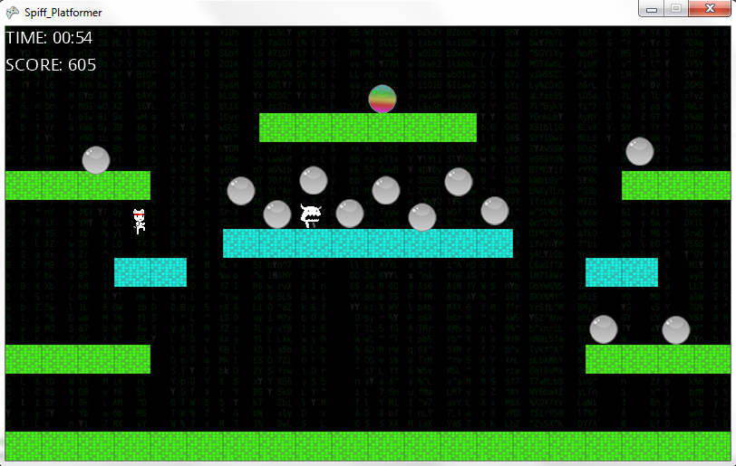
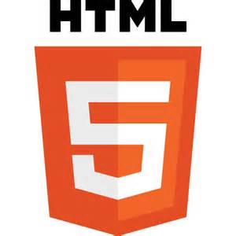
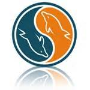
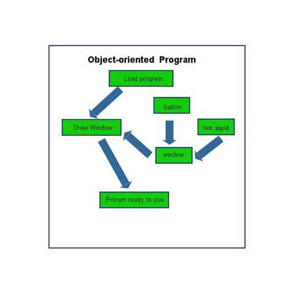
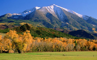

Andrea Sassu
Boulder
USA
andrea.sassu@colorado.edu
USA
andrea.sassu@colorado.edu
Portfolio
| Name | Position |
|---|---|
| Spiff the Cat | Creator |
| Web Portfolio | Creator |

Work Experiences
| Company | Position | Start date | End date | Description |
|---|---|---|---|---|
| Seagate | Firmware Information Development & Support Intern | May 2013 | Present | Work with the Firmware Support team to create websites and support firmware engineers within Seagate.,Solve bugs in 3rd party software, refactor existing websites, and give presentations to global management teams. |
| Quarter Heart Studio | Software Developer | Feb 2014 | Aug 2014 | Worked in Unity to develop a 3D turn-based tacis-style role-play game. |
Education
University of Colorado at Boulder
- Major: Computer Science, Math
- Track: Human-Centered Design
- Minor: Technology, Arts & Media
- GPA: 3.5
Skills

HTML & CSS
PHP

JavaScript

MySQL

Python

C++

Object-Oriented Design
I know about utilizing object-oriented programming along with RESTful design practices to optimize my code's capabilities.

Agile Software Development
I have worked with numerous agile teams that follow the scrum methedologies, working in sprints and using user stories to track and guide our teamwork.
Honors
| Honor | Year | Grade |
|---|---|---|
| TAM Capstone Thesis Project - Most Technical Project Recognition | 2014 | Senior |
| Dean's List (4 Semesters) | 2014 | Freshman, Junior, and Senior |
References
Iky Chan
Seagate
Manager
iky.chan@seagate.com
Mike Salazar
Seagate
Project Lead
michael.salazar@seagate.com
Hobby
| Name | Experience |
|---|---|
| Creative Writing | 9 years |
| Tap Dancing | 7 years |
| Video Games | 7 years |
Travel
Carbondale

Carbondale is a small town netstled in the Rocky Mountains between Glenwood Springs and Aspen. It's filled to the brim with unique cultural events and landmarks, and it's townfolk are a very tight-knit community.
Disneyland
The Disneyland Resort in California is known as the 'happiest place on earth'. I went for my high school graduation as a road trip and massive theme park adventure all wraped up into one.